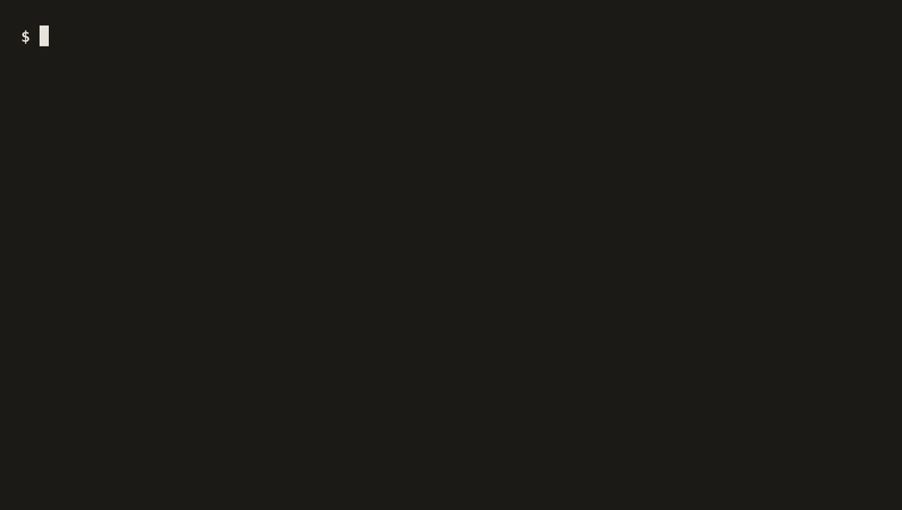

Your agent says the tests passed. Git checks.
norma installs one task loop, one verification gate and one skill library in your repository. Every coding agent follows the same procedure, read from plain files, and none of them can commit until the same gate has passed. The rule lives in a git hook, so switching agents changes nothing.
brew install jcarlosrodicio/tap/norma
No Homebrew? The install script needs only git. Then norma install in any repository.
- Works with
- Claude Code
- Codex
- OpenCode
- Cursor
- whatever comes next

Process in an agent-driven repository grows by accident
- A prompt here, a rule file there, a slash command only one agent understands.
- “Run the tests” is an instruction, not a check. It is followed when remembered.
- Each agent gets its own procedure, so the result depends on who was driving.
- The same gate is rebuilt by hand in every repository, and the copies drift apart.
norma is that process written once, made portable and made binding. A step that was skipped shows up as a refused commit, not as a review comment three days later.
One loop for every change
Each stage is a document in .agents/skills/, referenced by path. An agent that knows nothing about skills can still follow it; Claude Code also gets them as slash commands.
- orient
- enrichstop
- branch
- planstop
- implement
- verifygate
- review
- document
- close
- deliverstop
A human decides: after the spec, after the plan, before delivery.
run-task, supervised
From a vague request to verified code waiting for review. It stops three times, and you see the spec and the task list before any code exists.
auto-run-task, unattended
Hand over a roadmap phase and leave. Each stop becomes a decision it writes down, and the run ends at an open pull request with green CI. Never a merge, a deploy or a publish.
What gets refused, and why
The gate runs the checks your project declares in config.sh and writes a stamp of what it verified. The hook reads the stamp. Every refusal exists because something once got through without it.
| No. | Refused when | Because |
|---|---|---|
| H-1 | You are on the default branch | Work belongs on a branch; the project's convention names it. |
| H-2 | There is no stamp | Nothing was verified. |
| H-3 | A staged file is newer than the stamp | The code was edited after it was verified. The refusal prints the previous selection, ready to paste. |
| H-4 | Code is staged against a docs-only stamp | A docs-only run vouches for no test at all. |
| No. | Refused when | Because |
|---|---|---|
| G-1 | No test target is named | A reviewer must be able to judge whether the subset was the right one. |
| G-2 | --docs-only with code in the change | The mode is for documentation. It must not become a way past the tests. |
| G-3 | config.sh is missing or incomplete | A gate that silently runs nothing is worse than no gate. |
The one hole a hook cannot close is git commit --no-verify. Run the same gate in CI and that hole closes too. The full list, with the run context and the land script, is in docs/02-flows.md.
Upgrades never touch your decisions
The gate is byte-identical in every project; everything stack-specific lives in one file the project owns. norma upgrade replaces only the left column and reports local edits instead of overwriting them.
norma owns, replaced on upgrade
- scripts/harness/verifythe gate
- .githooks/pre-committhe hook
- scripts/harness/run, land
- .agents/skills/<vendored>copied, not linked, so they survive a clone
- AGENTS.md, between its markers
You own, never touched
- scripts/harness/config.shyour checks and test commands
- docs/harness/mandatory-steps.md
- docs/harness/architecture-rules.md
- openspec/config.yaml
- AGENTS.md, everything outside the markers
Install
You need git and a POSIX sh. Nothing else to install, upgrade or run the gate. The full loop also uses OpenSpec for its plan and apply stages.
Install the CLI, with Homebrew on macOS or Linux, or with the script, which clones the latest release.
brew install jcarlosrodicio/tap/norma # or curl -fsSL https://raw.githubusercontent.com/jcarlosrodicio/norma/master/install.sh | shAdd the harness to a repository. It detects the stack from its manifest; sixteen profiles ship, from Node and Flutter to Rails and Terraform.
cd your-project norma install --dry-run # read the plan first norma install norma doctor # what is still missingLet your agent finish it.
harness-setupreads the repository, interviews you for what the installer cannot infer, and fills in the config. From then on every change starts withrun-task.# any agent, by path .agents/skills/harness-setup/SKILL.md # in Claude Code /harness-setup
For you if
- you use more than one coding agent and want them to work the same way;
- you want “the tests passed” to be something git checks;
- you keep copying the same process between repositories.
Not for you if
- you want an agent runtime, an orchestrator or a hosted platform;
- you want changes merged with no human review;
- your checks cannot run from a shell. Native Windows is not supported.